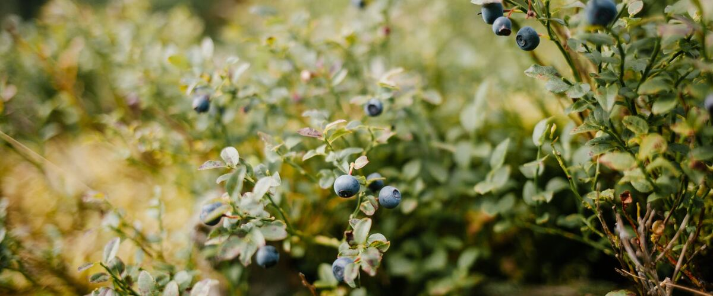

When to plant blueberries in Omak and Okanogan, WA
Plant blueberry bushes in Omak and Okanogan Apr 15 – Jun 3.
- Difficulty
- Easy
- Sun
- Full sun
- Spacing
- 4 to 5 feet apart
- Planting depth
- Same depth as in the pot
- Frost
- Hardy perennial; comes back every year
- First harvest
- Small crops in year two or three; full crops by year five
Why these dates
Omak and Okanogan's typical last spring frost is April 30. As a hardy perennial, this crop doesn't need to wait for that date. In the Inland Northwest, though, the soil usually isn't ready to work until about April 15.
Inland Northwest. Higher, colder interior valleys. Cold springs and an earlier fall mean a shorter season; quick-maturing varieties pay off.
How to grow blueberries in Omak and Okanogan
- Pick a sunny spot with soil that drains well, and mix in an inch or two of compost.
- Plant blueberry bushes Apr 15 – Jun 3, 4 to 5 feet apart. Same depth as in the pot.
- Mix peat moss or acidic compost into the planting hole, mulch with sawdust or bark, and pinch off flowers the first year.
- Harvest: Pick berries a few days after they turn fully blue, when they roll off into your hand.
Key numbers
- 4.5–5.5Soil pH
- Ammonium, not nitrateNitrogen type
- 2–4 inches sawdust or barkMulch
- 1–2 inches a week in summerWater
- 3–6 years oldMost fruitful canes
- By year 5Full crops
How it works
The plant biology behind the advice above, in plain language.
Acidic soil is the whole game
Blueberries need acidic soil, with a pH of about 4.5 to 5.5. Many Northwest soils west of the Cascades are already close, but soils east of the mountains are often neutral or alkaline. Test before you plant. At the wrong pH, blueberries can't take up iron and other nutrients, and the classic symptom is yellow leaves with green veins.
To lower pH, mix elemental sulfur into the soil. Soil bacteria slowly turn it into acid, which takes months, so ideally add it the season before planting and retest. Avoid aluminum sulfate, which acts faster but can build up to levels that harm the roots. If your soil is alkaline, growing in large containers or raised beds of acidic mix is often easier than fighting it.
Shallow, fussy roots
Blueberry roots are fine, shallow, and have no root hairs. Instead they rely on partnerships with soil fungi to absorb water and nutrients, and those fungi do best in soil rich in organic matter. That's why growers work peat or acidic compost into the planting area and keep 2 to 4 inches of sawdust or bark mulch over the roots. The mulch keeps them cool and moist and slowly adds organic matter.
Shallow roots also dry out fast. Give them about an inch or two of water a week in summer, especially while berries are swelling, ideally through drip irrigation.
Feeding
Blueberries take up nitrogen best as ammonium, so use a fertilizer made for acid-loving plants or ammonium sulfate rather than nitrate fertilizers. Split it into two or three small doses from early to late spring. Too much at once burns the shallow roots. Skip fresh manure, which is salty and tends to raise pH.
Pollination and pruning
Northern highbush blueberries are partly self-fertile, but planting two or more varieties that bloom at the same time gives bigger berries and heavier crops through cross-pollination. They also need a winter chill of roughly 800 to 1,000 hours below 45°F, which Northwest winters easily provide.
Fruit forms on wood that grew the previous summer, and canes are most productive at about three to six years old. Each winter after the plants are established, remove a few of the oldest, grayest canes at the base and thin out weak, twiggy growth. That keeps young, fruitful canes coming.
Pests and diseases
Birds are the biggest loss, so net bushes as berries begin to color. Spotted wing drosophila, a small fruit fly that arrived in the Northwest around 2009, lays eggs in ripening berries, especially later in summer. Picking every few days and refrigerating berries promptly limits the damage. Mummy berry, a fungus that turns berries into shriveled gray mummies, overwinters in fallen fruit; rake up mummies and refresh the mulch in late winter.
Harvest and storage
Blueberries don't get sweeter after picking. Wait several days after they turn fully blue; they keep sweetening on the bush and drop easily into your hand when ripe. Refrigerate them unwashed, and rinse just before eating. They also freeze well spread on a tray before bagging.
Common questions
When is the last frost in Omak and Okanogan, WA?
Typically April 30. In 9 years out of 10, frost is over by May 15. These are 1991–2020 NOAA climate normals for Omak Airport.
Is it too late to plant blueberries in Omak and Okanogan?
The spring planting window runs through June 3. Potted plants can still go in later if you water them faithfully through their first summer.
How long until I can pick blueberries?
Small crops in year two or three; full crops by year five. Pick berries a few days after they turn fully blue, when they roll off into your hand.
Why are my blueberry leaves turning yellow?
Yellow leaves with green veins usually mean the soil pH is too high, so the plant can't take up iron. Test the soil; if it's above about 5.5, work in elemental sulfur and switch to an acid-plant fertilizer. Overall pale leaves can also mean the plant simply needs nitrogen.
Do I need two blueberry bushes?
One bush will fruit, but two or more varieties that bloom at the same time give bigger berries and heavier crops through cross-pollination. Choosing early, mid and late varieties also spreads the harvest over the summer.
Do coffee grounds make soil acidic enough for blueberries?
Not reliably. Brewed grounds are close to neutral and change soil pH very little. They're fine as mulch or compost, but use elemental sulfur to actually lower pH, and test to confirm.
How long until blueberries produce?
Expect small crops in the second or third year and full crops by about year five. Picking off the flowers in the first year helps the plant build roots, and a healthy bush can produce for decades.
Also plant in Omak and Okanogan around the same time
Planting dates for blueberries in nearby areas
- Ellensburg, WA Apr 15 – Jun 3
- Spokane, WA Apr 15 – Jun 3
Full planting calendar for Omak and Okanogan · Blueberries in every city